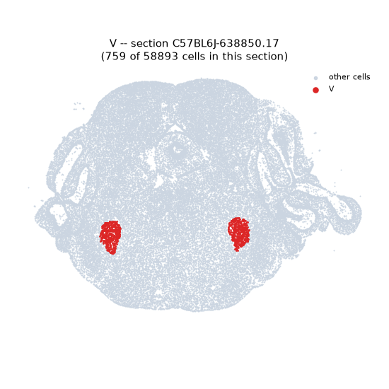
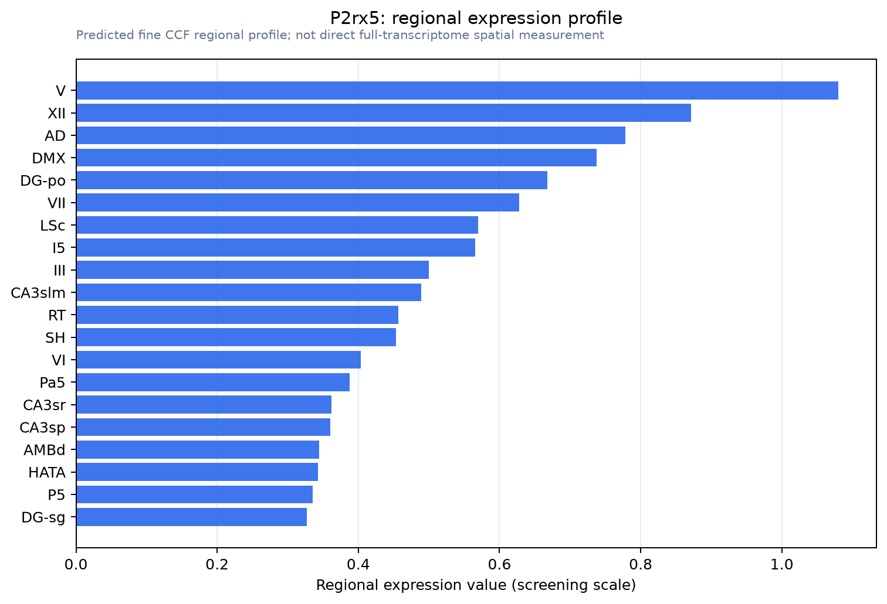

P2rx5
P2X purinoceptor 5 (P2X5)
Spatial tier: RESTRICTED · Class: ION_CHANNEL · Top region: V (Motor nucleus of trigeminal) · Positive regions: 22/554
44.4Discovery Score
39.0Targetability Score
CEvidence grade C
What this means: P2rx5: fine CCF profile is restricted toward V (top regions: V, XII, AD, DMX, DG-po; 22 positive regions); direct spatial validation is still required.
Direct spatial evidence
MERFISH REGION LOCATOR

Regional expression figure

Predicted WMB × fine-CCF profile; not direct full-transcriptome spatial measurement.
Spatial profile
Evidence and specificity
- Evidence status
- PREDICTED_FINE
- Direct sources
- None; predicted localization only
- Exclusive threshold
- 12 positive regions out of 554
- Spatial specificity
- 0.328
- Top-region fraction
- 0.065
- Filter status
- PASS
Interpretation limits
- Cell-type-to-region projection is imputed expression, not direct spatial measurement.
- Adult reference atlases do not establish stability across age, sex, strain, state, or disease.
- Transcript abundance does not guarantee protein abundance or genetic-tool performance.